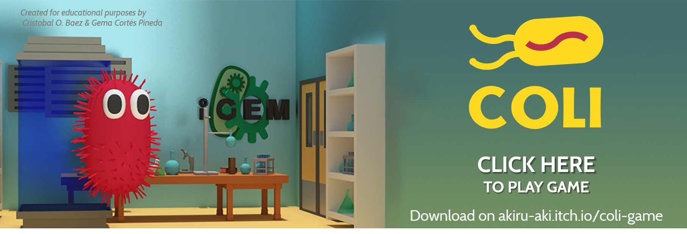

Over time, women have fought for equality between men and women, starting with the vote, being able to study, work, among many others. Currently in Mexico this issue has become more relevant, since there is still a certain sector of society that does not share what was written previously. And what does a science contest have to do with this? Simple, we will talk about women in science and the obstacles they have had to go through or that they are going through to achieve their goal.
According to CONACYT (National Council for Science and Technology in Mexico) currently in the SNI (National Research System), women represent the 37%, there are 10,683 scientists out of the total of 28,630 members of the registry, while in 2000, women accounted the 33%, there were 5919 scientists out of a total of 17,637 . Similarly, in a statement, UNAM said that in the 1984-2016 period, the number of researchers in the National System of Researchers (SNI) increased from 1,396 to 25,072. Of the first total, 1,343 (81.9 percent) were male, and 253 (18.1 percent) female.
AMC (Mexican Academy of Sciences) data of February 2018 indicate that in its membership of scientists in areas of exact sciences (which includes astronomy, physics, engineering, mathematics, chemistry and geosciences) there are 1,117 men against 194 women.
Continue talking about the AMC, in Natural Sciences, which includes agro-science, biology and medicine, there were 639 scientists and 260 female scientists; while in Social Sciences there were 194 of the first group and 94 of the second and in Humanities 145 researchers versus 136 researchers.
At UNAM (National Autonomous University of Mexico), emeritus professors and researchers represent only 12% of a total. Meanwhile, at the National College, an institution born with the intention of grouping the most outstanding artists, scientists and writers of Mexico, there have been only four women as members in the 75 years that it has existed.
In the case of the state of Puebla, of the total number of researchers recognized by the SNI, 65.4% corresponds to the Benemérita Universidad Autónoma de Puebla (BUAP) and the rest collaborate in other public and private higher education institutions. On the other hand, the number of women researchers in the SNI who collaborate in the BUAP is 470, while in 2010 they were 297. Of that group of national researchers attached to the BUAP, 19.1% are Candidates, 56% are located in Level I; 17% in Level II; and 7.7% in Level III. Nationally this distribution is very similar and is expressed as follows: 19% are Candidates; 54.2%, Level I; 17%, Level II; and 8.5%, Level III. The BUAP has consolidated an internal system of recognition of its researchers through the Register of Researchers of the Vice Rectory of Research and Postgraduate Studies, in which 707 members participate, of which 281 are women; that is, 39.74% of the academics registered in said registry belong to the female sex.
We are talking about statistics and prominent and important research centers in Mexico because we consider it relevant to show an introduction on how the situation of science in Mexico is and because, as future research or women belonging to this field, we consider it important to enter and study the reasons for the causes of inequality in Mexico.
Our work is not only limited to statistics, but to a reflection of what women actually go through science. Many of them throughout history had to fight against the stereotypes imposed by society and men in science, where they made sure to leave behind women in the shade, which led them to hide to acquire knowledge or be relegated, despite his important contributions to sciences.
As an example, we have Albert Einstein's wife: Mileva Marić. This woman was a physical and mathematical Serbian, however, at that time, those careers were only studied by men, so her father had to ask for a special permission for her to study. Today we can know part of its history, thanks to the book “El nobel and the showgirl” of Nativel Preciado where he describes that both exchanged letters which were mentioned as collaborators of various works among them one about the relative movement. Despite this, she did not get any recognition about all these works.
However, there are hopeful emblematic cases: Marie Curie, twice Nobel Prize (1903 of Physics and 1911 of Chemistry) and first woman to obtain that award for her research on radiation, her daughter Irene Joliot Curie, who in 1935 won the same recognition for his work in synthesizing radiation, Rosalind Franklin and his experiments in the discovery of DNA structure, Jane Goodall and his contributions in chimpanzee behavior as well as Lynn Margulis and his theory of cellular origin, Barbara Mcclintock who discovered in in the 40s and 50s, the existence of DNA fragments that are capable of changing their position on a chromosome and that causes nearby genes to become active or inactive. However, she received a Nobel Prize in Medicine and Physiology until 1983, due to the ideas they had at that time.
The scientific field has historically been one of the most relegated in terms of gender equality. Mexico is no exception, and although in recent years it has made some significant progress, the inequality in this area is still worrying.
How do we know that inequality in science exists in Mexico?
Unfortunately, there is no record of these types of cases and that may be due to different factors, of which we will limit ourselves to two: do not exist or have not been reported. To obtain this information, we will focus on interviewing researchers and collecting data from women who are not yet in this area.
We decided to interview two important areas for us, in which we are at the intermediate and transition point: groups of female professors and doctors at the university and groups of teenagers prior to a professional education start.
The reason we decided to work with these two case groups was because:
The first interviews we conducted were focused on female doctors from both our university and the Tecnologico de Monterrey in Chihuahua, the latter one conducted by the Tec-Chihuahua team.
The first interviews aimed to gather information in relation to the experience of female doctors belonging to the scientific field which have stood out for their interest, passion and trajectory in science, all of them, it should be emphasized, teachers, with an academic degree of doctorate (phD).
See the annex with the title of "interview with female doctors in the area of science"
The second interviews were conducted with students at the secondary and high school levels, conducted in 1 high school group and 1 high school group, where we focused on their ages and school grades.
See the annex with the title of "interview with girls of middle and high school"
The interviews conducted here and shown to the female doctors contained questions without a sequential order, since the way they were posed depended on the free sequence that the context gave and the interaction with the interviewee, so they do not resemble those presented in the questionnaire. The advantage of this procedure allowed us the possibility of not limiting the spontaneous responses of the interviewees, thus obtaining the fundamental and specific information about the concept of themselves, as well as their condition and identity.
All these questions were asked with the necessary permission and respect towards the interviewees, complying with the specifications and requirements necessary for the creation of an environment of trust and comfort. These interviews were conducted in their work areas.
This sought to obtain qualitative data shown below.
According to the researchers interviewed (see annex), we observe that the main factor that influences the development of women in science is social / cultural, since both society and family play an important role in the education of women and girls.
One point at which most of the scientists interviewed agree, is that the mentality of society must be expanded or changed and not put "gender" in the different careers that exist, especially those involved in the area of research or industrial. In addition to this, another limitation not only of women, but that affects the entire body of researchers is economic, which slows the development of large projects. On the other hand, most of the researchers report being interested in science while in university and fortunately they have not suffered any kind of inequality or labor injustice due to being a woman.
Interviews with middle and high school girls could not be asked because we were denied permission in the schools we had planned, however, we suggest the following dynamics for other team who would like to work this subject too.
The questions should consisted equally of a multiple-choice questionnaire with subparagraphs of yes and not as an answer for a more organized analysis and statistical arrangement of the data.
In question (3) that refers to the social sciences, these include economics, political science, geography, demography, human ecology, psychology, sociology, semiology, anthropology, archeology, history and linguistics.
These interviews should be conducted to learn about the context of girls in secondary education studies, close to the entrance of education at university level. We suggest to give sheets with the questions to speed up the activity and gather the information in the fastest and most efficient way.
For the realization of these human practices we have the support of MS. Xochitl Arteaga Villamil, an expert in the area of biology, philosophy of science and defender of women's rights which was a great guide and support for the writing of both the writing and the focus of the interviews and the solution proposed by the team. We met with her on multiple occasions to review our work and she was a great collaborator in the final focus of our women in science themes.
From the results and conclusions obtained, what we propose is to make a reform of certain articles such as: 5 and 36, since these are not explicit enough in the role of women in science. That is why we decided to go with the lawyer Osvaldo Sastré Gómez to illustrate with his vast knowledge in this area.
This idea surged because of the lack of information and norms that we found about the paper of women in science, a situation that, considering our country, must be observed.
Check out the legal margin initiative drafted by the lawyer Osvaldo Sastré Gómez here: Gender Equity Initiative
The team proposes two solutions, the first one, already mentioned previously, which is our legal proposal on the regulation of women's equity in the scientific field. The second is a solution based on the second problem we find: the social sphere.
The real question is how to interpret and solve this? It is clearly difficult to solve, but the team proposes certain dynamics and activities that can be carried out to eradicate or try to reduce this factor.
It is generally assumed that science has been made by men. History, with exceptions, has marginalized the collective memory of women scientists.
The preferences of women remain related to the traditional idea of training as an extension of the domestic, where the compatibility of the role of wife and mother with that of the professional is sought; then, by strongly associating professional training with gender stereotypes, expectations, search and choice are defined based on its compatibility with the feminine and masculine roles that we have built socioculturally
The conditions in which the scientists work in Mexico are a reason for study including the impact of being a woman and being a scientist in the family, as well as innumerable factors of the socio-political, economic and cultural environment such as the performance of scientific work in the capital of the Republic or in the various entities, in research centers or institutions of higher education, in private or public universities, in international organizations, etc.
The purpose of this work was to investigate the state that keeps the participation of women scientists and researchers in Mexico, in order to propose actions that consolidate their development as promoters of knowledge and drivers of scientific innovation in the country.
The first section of this paper presents the data provided by organizations and programs dedicated to promoting scientific and technological research in the country, such as the Mexican Academy of Sciences, the Women in Science Program and the SNI. On the other hand, the participation of women researchers from the Benemérita Universidad Autónoma de Puebla (BUAP) was presented, all of this according to the purpose of our project and also the impact and scope that we wanted to show: women in science.
Women in science as a new era, as a new and real proposal, as a problem and also as a solution.
We are not born as a woman, but we become one
Simone de Beauvoir
We are convinced that children represent our future as a country; If we help cultivate interest in science, these children will grow up without gaps in information about it. That is why this category is divided into classes, workshops and a videogame that they developed to understand the problems we address within the project.
Synthetic biology is a weird concept in many schools in Puebla, we decided to make several visits to middle and high school institutions to share with children what is the positive impact of synthetic biology and the develop of this field in recent years. In order to have better communication with guys we receive support by a licentiate in education to structure our program.
After we received some advices, we divided our program in it in two parts: Concepts and Activities.
A concept class need to be short (around 20 minutes) and as familiars as possible, we did not use a lot of technicism and we replaced some concepts for other more familiar, for instance genes for Lego pieces, with this strategy we got the attention of the groups.
For activities we played some games in order to feedback the new concepts they learned such as synthetic biology, biobricks, genes, and much more. These games were adaptations of Mexican games as “encantados” and “policias y ladrones”.
We received a good response by children, and they learn a lot of new terms in an easy way.
Our commitment to society was fundamental for our team, because we are sure that if people know more about the problems that science tries to solve, they will want to get involved, apart from the fact that we consider not only to leave work in a laboratory, it is important to transmit that new information; therefore, our team tried to involve society through various activities
We believe that between science and society there is a point that makes them converge, disclosure, without it both would exist in a vacuum of ideas and problems; That is why we seek to impact with information and proposals, thanks to this we obtained a constant feedback in which we were able to learn bidirectionally.
Our project is in direct contact with the existence of pollution caused by plastic. Since this direct relationship exists we have thought about how important it is, as a society to have a culture of separation and recycling, in this way to put our grain of sand by decreasing the contamination by this material, either by collecting and recycling together with organizations and companies in charge of their collection and treatment or individually in our home.
contamination by this material, either by collecting and recycling together with organizations and companies in charge of their collection and treatment or individually in our home.
We joined with Green Carson to seek the same objective; promote the culture of recycling, this was achieved through conferences held at our University on Monday, August 29, 2019.where the problem of plastic was addressed through raw figures as well as its impact on ecosystems on land and sea, to later explain the importance of separation and recycling PET, the ways to classify it, as well as the role we have as an individual and society to solve this problem.
Throughout the talk, several of the students involved expressed ideas of projects that could be carried out for the reduction of PET and its use. This reinforces how important it is to inform students about current issues and work on solutions within their reach, in addition to the positive feedback that the company and team representatives received.
Our team member, Jessica Ojeda, with the support of the city council of the city of Córdoba, Veracruz, organized Science Workshops with a reach for people of all ages. These 3 workshops consisted of a workshop on Scientific Illustration, Science Workshops and a talk about Women in Science, which had a deep and direct relationship with our human practices on Women in Science.
These workshops were held at the City Municipal Library on August 30 and 31, September 7 and 8, and September 21 and 22.
This workshop was planned and taught by Gema Cortés Pineda
The illustration has been applied in science since ancient times, to represent the discoveries to the public, inside and outside the scientific field. This need to disseminate information is still present today through photography, 3D modeling, and digital drawing focused on science. That is why, the scientific illustration workshop is proposed, since it allows the attendees to understand in a practical way, the need to not only produce science in the laboratory or the field, but to make it accessible and open to the public. .
The topics addressed were the following:
Some attendees had good theoretical and practical knowledge about the management of color applied to watercolor, this facilitated the progress of the workshop and allowed more time for observation exercises and to see applications of scientific drawing. It was very gratifying to see the interest of the attendees and that our PlastiCO2 project was a close and done example in our region. This workshop allowed attendees to understand that the applications of drawing are not limited to entertainment or advertising design, but that it has been and continues to be an important pillar for scientific dissemination.
The speakers were Jessica Ojeda Ochoa and the biologist Mirna Andrea Arellano Ruiz. We had the participation of the chemist Audberto Sánchez Muñoz .
During the time in which we approach surveys and interviews within our integrated human practices for women in science, we realize that the main factor by which girls lose interest in science is by the family nucleus, that is; The parents' opinion about science and related careers is how we understood that not only was the dissemination of science at different educational levels important, but also to fathers and mothers. We know that we cannot impose a position on science, because people are free to give a different opinion; However, we believe it is important to disseminate true information about the subject, so that people can opt for a solid position with basic information. This is how the discussion of women in science emerged, elaborated in order to eliminate the stereotypes that Mexican culture has formed over decades about gender roles within science.
The talk began with examples of outstanding women within the scientific field with their respective contributions, after that figures from the AMC (Mexican Academy of Sciences) and CONACYT (Council of Science and Technology) on the subject were provided; this with the objective of visualizing the great difference between women and men that develop within the area, comparing this figure with other countries of Latin America and later with countries around the world, then a video about interviews with doctors about the theme and perspective of each of them, the figures we obtained through the surveys we conducted were also explained, to finally explain
We consider that it was a unique experience to be able to carry out this talk on the subject in which we immersed ourselves for several months, for us it was very important the assistance of fathers and mothers in which we could observe a lot of participation through questions. We undoubtedly believe that it is very important to continue the dissemination of this information with the aim of eliminating erroneous ideologies about women in science and promoting their participation and interest in it.
This workshop was planned and taught by Jessica Ojeda Ochoa
Many times educational centers lack teaching materials and personnel to prepare and conduct experimental activities or educational workshops. These limitations make classes become expository, with little or no participation of students and the use of laboratories is restricted. That is why we decided to go beyond the theory, thus planning the science workshop, it was developed so that people of all ages could have direct contact with science. Our team knows that manipulating, experimenting and showing science in its real context fosters the desire to know and be partakers of the scientific world. In addition, it encourages adopting a positive attitude towards science while encouraging the development of skills related to the way of doing science, such as observation, question and prediction, Interpretation of results, etc.
The workshop was opened through basic experiments of different sciences, in order to capture everyone's attention, after that they followed some experiments about DNA, for example the extraction of DNA with fruits such as strawberries, bananas and tomatoes; the principles of each experiment were explained to them while they were carried out with the participation of everyone and after that they were told about the applications of this knowledge, all this was necessary to land on the subject of synthetic biology, where they were explained what it was and how our team worked to solve environmental problems such as water acidification and plastic pollution.
It was quite satisfying to notice the children's interest in the experiments performed, see their curiosity and be able to answer their questions; after this activity we have no doubt that children generate the best questions; Well, your curiosity is present all the time. It was also comforting to see the participation of adults as well as their surprise to understand why some phenomena happen that until then they did not fully understand or had not even questioned.
In the current system of educational competencies that the SEP asks teachers, it is not enough that the student only memorize terms, dates, equations and data in general. This knowledge needs to be processed and improved, that is, one must understand and associate them in different fields, in order to apply it in a problem or new area of opportunity. That is why in our science and math studies we discover new areas and topics such as electromechanics, bioethics or astrophysics.
This, together with raising interest in the syllabus, are the objectives of the educator in the curriculum, as the student has to raise their knowledge beyond what is seen in the classroom.
For learning, students can be approximated by different senses, such as visual, auditory and kinesthetic, with which they explore their environment and their understanding of the sciences and philosophy of the human being. Each student responds with different degrees of effectiveness depending on their predisposition, consequently, the teacher has to use different tools to capture the student's attention and facilitate a personalized teaching. Exercises such as dictation, elaborate and examine illustrations, reading and summaries, among others, are common activities that educators use for understanding and information processing. And yet, modern education often ignores a set of tools that cover all the senses of the human being for learning in a single medium, as well as being flashy and fun for students.
That is the reason by we decided to apply a survey to students of middle school, to verify how they really get certain scientific knowledge that can be, in a way, difficult to explain for teachers. As well as knowing how students prefer get knowledge about this area.
The teacher often thinks that these means are a substitution that is naturally from one method to another "better", a book by Wikipedia. The assumption will be made that articles and digital books replaced physical versions in libraries, since today's students are more instructed to investigate using the internet. However, these are totally different means, which have different strengths and weaknesses. For example, on the internet you will find the full biography of Hernán Cortes more easily, while in a university thesis you can have specialized research on the psyche of the conqueror of America. Greater ease in finding content, against specialization of information, difficulty in verifying data, backups and sources, against less scope and slow distribution.
The educator must understand that, despite having certain similar characteristics (such as content and information), they should be used in different instances. And so, like the didactic or illustrative material that can help to understand the topics of the class, these can be confusing and ineffective if they are not used in the right way.
After all research, we have a question, how do students really prefer to obtain this information?
According to the results obtained from the applied surveys, we got the follow graph which indicate that children would prefer to learn science through video games more than books.
Likewise, the conception of videogames as an educational tool is neglected, seen merely as a distractor and not a facilitator for learning. In addition to that the designers and creators of this tool do not understand its potential, limitations and disadvantages, being poorly designed at several points, such as:
With all this in mind, the game "Coli", (Created by Cristobal O. Báez and Gema Cortés Pineda) is intended as a key teaching, for certain complicated elements of the agenda of this project for the iGEM, rather than being an encyclopedia of varied knowledge to understand biology.
Likewise, it is designed for minds of secondary, elementary school, who have basic concepts of biology, to understand the game.
In this game we follow Coli, a bacterium of type E. Coli, whose mission is to become a super cell, in order to reduce CO2 in oceans and save the planet.
Through a talk with our heroine, they will tell us about their origin and how they will save the planet. However, she will need our help to be genetically modified, and to be a super cell, through biobricks.
In the same way Coli, after transforming, will give way to clean the ocean in an arcade minigame under a stopwatch, where we will have to collect enzymes as quickly as possible.
